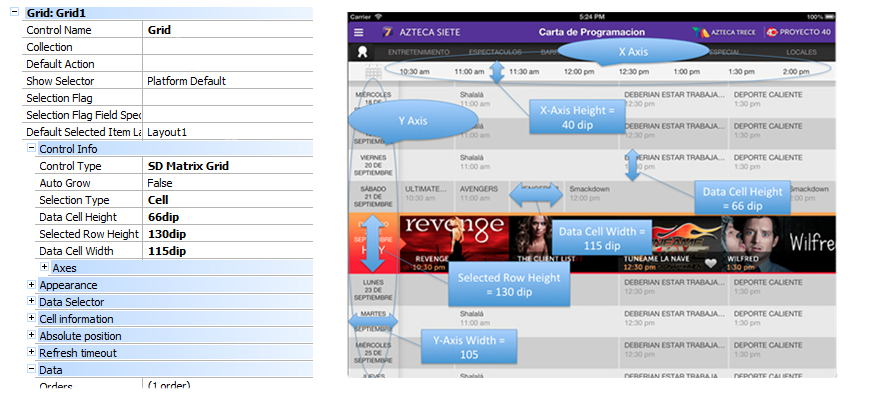
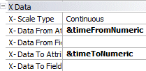
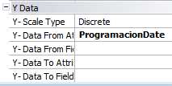

HowTo: Using Matrix Grid Control for Smart Devices (GeneXus 16)
Sometimes you want to display information in two-dimensions on a single screen, for example: to list a Dentist's patients per hour/day, to show the programming of a television channel, among others. But the creation of this type of smart devices interfaces, with horizontal and vertical scroll, is too complicated so you often find this idea implemented by a series of steps completely unnecessary. As form GeneXus X Evolution 3 you can resolve this problem using the Matrix Grid Control to display data in two-dimensional grids.
|
| Property | Description |
|---|---|
| Selection Type | |
| Data Cell Height | The height of the data cells |
| Selected Row Height | The height of the row labeled "Selected" |
| Data Cell Width | The width of the data cells |

Section Axes Properties
X-Axis — refers to the values on the horizontal axis.

| Property | Description |
|---|---|
| X-Axis Width | The width of the X-axis row |
| X-Axis SDT | The SDT which contains the values for the X-axis |
| X-Axis Value Field Specifier | The SDT's item with the value to use as an identifier |
| X-Axis Title Field Specifier | The SDT's item with the title to use |
| X-Axis Description Field Specifier | The SDT's item with the description to use |
Example
Loading X-Axis, hours a day every 30 minutes. This is the load of the SDT &TimeAxis. &TimeAxis is assigned to the X-Axis SDT property.
// Load Time Axis &TimeAxis = new() &vTime = YMDHMStoT(&DayReference.Year(),&DayReference.Month(),&DayReference.Day(),0,0,0) for &i=1 to 60 * 24 step 30 // 24 hours to minutes &TimeAxisItem = new () &TimeAxisItem.Id = &vTime.Hour() * 60 + &vTime.Minute() // 24 to 12 hs conversion &m = iif(&vTime.Hour() >= 12, "pm", "am") &vTimeHour = iif(&vTime.Hour() >= 12, &vTime.Hour() - 12 , &vTime.Hour()) &vTimeHour = iif(&vTimeHour = 0, 12, &vTimeHour) &TimeAxisItem.Description = format("%1:%2 %3", &vTimeHour, trim(iif(&vTime.Minute()=0,"00",&vTime.Minute().ToString())), &m) &TimeAxis.Add(&TimeAxisItem) &vTime = &vTime.AddMinutes(30) endfor
Using Data Provider:
TimeAxis { &vTime = YMDHMStoT(&DayReference.Year(),&DayReference.Month(),&DayReference.Day(),0,0,0) TimeAxisItem input &i = 1 to 60 * 24 step 30 // 24 hours to minutes { Id = &vTime.Hour() * 60 + &vTime.Minute() // 24 to 12 hs conversion &m = iif(&vTime.Hour() >= 12, "pm", "am") &vTimeHour = iif(&vTime.Hour() >= 12, &vTime.Hour() - 12 , &vTime.Hour()) &vTimeHour = iif(&vTimeHour = 0, 12, &vTimeHour) Description = format("%1:%2 %3", &vTimeHour, trim(iif(&vTime.Minute()=0,"00",&vTime.Minute().ToString())), &m) } &vTime = &vTime.AddMinutes(30) }
Y-Axis — refers to the values on the vertical axis.

| Property | Description |
|---|---|
| Y-Axis Height | The height of the Y-axis column |
| Y-Axis SDT | The SDT which contains the values for the Y-axis |
| Y-Axis Value Field Specifier | The SDT's item with the value to use as an identifier |
| Y-Axis Title Field Specifier | The SDT's item with the title to use |
| Y-Axis Description Field Specifier | The SDT's item with the description to use |
| Y-Axis Selection Flag Field Specifier | The SDT's item that indicates if the row is selected or not |
Example:
Loading Y-Axis, days of the week -2 weeks.
The row corresponding with the current data is marked as selected and the "Today" subtitle is added.
// Load Day Axis &DayAxis = new() &FirstDayOfWeek = today() &varFirstDayOfWeek =ymdhmstot(&FirstDayOfWeek.Year(),&FirstDayOfWeek.Month(),&FirstDayOfWeek.Day(),0,0,0) &varFirstDayOfWeekD =ymdtod(&FirstDayOfWeek.Year(),&FirstDayOfWeek.Month(),&FirstDayOfWeek.Day()) for &i = 0 to 13// 7 days of week based on reference day &DayAxisItem = new() &DayAxisItem.Id = &FirstDayOfWeek.AddDays(&i) &DayAxisItem.Title = upper(&DayAxisItem.Id.DayOfWeekName()) &DayAxisItem.Title += format("%1%2 DE %3", newline(), &DayAxisItem.Id.Day(), upper(&DayAxisItem.Id.MonthName())) &DayAxisItem.Selected = iif(&DayAxisItem.Id = Today(), TRUE, FALSE) if (&DayAxisItem.Selected) &DayAxisItem.Subtitle = "Today" endif &DayAxis.Add(&DayAxisItem) endfor
Using Data Provider:
DayAxis { &FirstDayOfWeek = today() &varFirstDayOfWeek = ymdhmstot(&FirstDayOfWeek.Year(),&FirstDayOfWeek.Month(),&FirstDayOfWeek.Day(),0,0,0) &varFirstDayOfWeekD = ymdtod(&FirstDayOfWeek.Year(),&FirstDayOfWeek.Month(),&FirstDayOfWeek.Day()) DayAxisItem input &i = 0 to 13// 7 days of week based on reference day { Id = &FirstDayOfWeek.AddDays(&i) &Title = upper(&DayAxisItem.Id.DayOfWeekName()) &Title = &Title + format("%1%2 DE %3", newline(), &DayAxisItem.Id.Day(), upper(&DayAxisItem.Id.MonthName())) Title = &Title &Selected = iif(&DayAxisItem.Id = Today(), TRUE, FALSE) Selected = &Selected Subtitle = iif(&Selected, "Today", "") } }
X-Axis Data — refers to the position of the data on the horizontal axis.

| Property | Description |
|---|---|
| X-Data From Attribute | Attribute or variable — with the value of one identifier defined on the X-Axis Value Field Specifier — which indicates the starting position |
| X-Data From Field Specifier | |
| X-Data To Attribute | Attribute or variable — with the value of the identifier defined on the X-Axis Value Field Specifier — which indicates the final position |
| X-Data To Field Specifier |
Y-Axis Data — refers to the position of the data on the vertical axis.

| Property | Description |
|---|---|
| Y-Data From Attribute | Attribute or variable — with the value of the identifier defined on the Y-Axis Value Field Specifier — which indicates the starting position |
| Y-Data From Field Specifier | |
| Y-Data To Attribute | Attribute or variable — with the value of the identifier defined on the Y-Axis Value Field Specifier — which indicates the final position |
Example:
In the load event of the grid load values for each cell specifying the X, Y where the data should be placed:
Value X= &TimeFromNumeric (Start Time) y &TimeToNumeric (End Time)
Value Y= CartaProgramacionFecha
Event Grid1.Load &timeFromNumeric = val(CartaProg_Hora_Inicio.Substring(1,2)) * 60 + val(CartaProg_Hora_Inicio.Substring(4,2)) &timeToNumeric = val(CartaProg_Hora_Fin.Substring(1,2)) * 60 + val(CartaProg_Hora_Fin.Substring(4,2)) EndEvent
Appearance
See the Matrix theme-class for Smart Devices for more information
Here is another load sample without base table:
Event Grid1.Load &XAxisfrom = <XAxis position to start showing data> &XAxisto = <XAxis position where data finishes> &YAxisfrom = <YAxis position to start showing data> &YAxisto = <YAxis position where data finishes> &DataToShow = <Value showed in grid position (x,y)> load &XAxisfrom = <XAxis position to start showing data> &XAxis = <XAxis position where data finishes> &YAxisfrom =<YAxis position to start showing data> &YAxis = <YAxis position where data finishes> &DataToShow = <Value2 showed in grid position (x2,y2)> load Endevent
This is an example of loading two values. You can load as many values as you need.
Availability
As from GeneXus X Evolution 3 for Android and iOS.